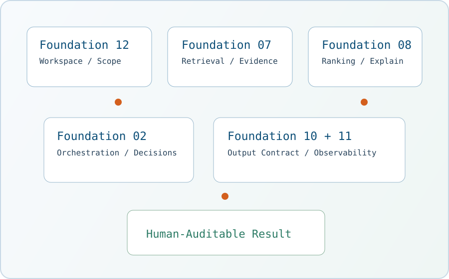

Forge - Your AI Repo Workbench
Mit Kontrolle statt Magie. Forge hilft beim Verstehen, Prüfen und Verbessern von Repositories mit expliziten Schritten, sichtbarer Evidenz und nachvollziehbaren Ergebnissen.

Warum Forge
Explizite Modi
Das Verhalten bleibt verständlich: query, review, describe, test.
Menschlich prüfbar
Ausgaben sind an Pfade, Treffer, Diagnostics und klare Entscheidungen gebunden.
Komponierbare Foundations
Fortgeschrittene Workflows bauen auf inspizierbaren Kernbausteinen auf.
Standardmäßig nützlich
Starke Defaults, optionale Konfiguration und lokaler Repo-First-Fokus.
Kurzes CLI-Beispiel
forge query "Wo wird Session TTL konfiguriert?"
forge review src/checkout.py --focus reliability
forge describe core/workspace_foundation.py
Wähle deinen Einstieg – je nach Zeit und Ziel
Quick Start
python3 -m venv .venv
source .venv/bin/activate
python -m pip install --upgrade pip
python -m pip install -e .
forge init --non-interactive --template typo3-v14
forge query "Wo ist der Runtime-Settings-Resolver implementiert?"Installation und Einrichtung
Documentation
Zugriff auf User-Doku, Developer-Foundations und das komplette Open-Source-Repository.
Trust, Safety, Offenheit
- Developer-Dokumentation: Foundations, Verträge und Architekturhinweise liegen in
docs/developer/im Repository. - Trust & Safety: Regeln, Schutzmechanismen und Grenzen sind explizit dokumentiert.
- Logging & Limits: Laufzeitgrenzen (Read/Write-Scope) und Diagnose-Transparenz sind in Runtime-Settings & Sessions dokumentiert.
- LLM-Provider & Local LLM: Forge unterstuetzt OpenAI-kompatible Endpunkte, inklusive
OpenAI,LiteLLMundvLLM, beschrieben in LLM-Setup. - Open Source (MIT): Forge ist unter der MIT-Lizenz verfügbar (
LICENSEim Repository).